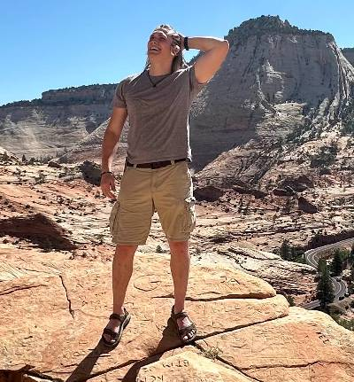

McKay Eastham | WDD 130
Howdy y'all! My name is McKay Eastham and I am from Flower Mound, Texas, just noth of Dallas. I like listening to music, learning new things, and spending time with my friends.
Howdy y'all! My name is McKay Eastham and I am from Flower Mound, Texas, just noth of Dallas. I like listening to music, learning new things, and spending time with my friends.